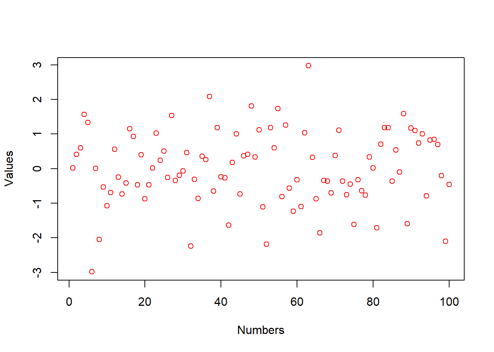
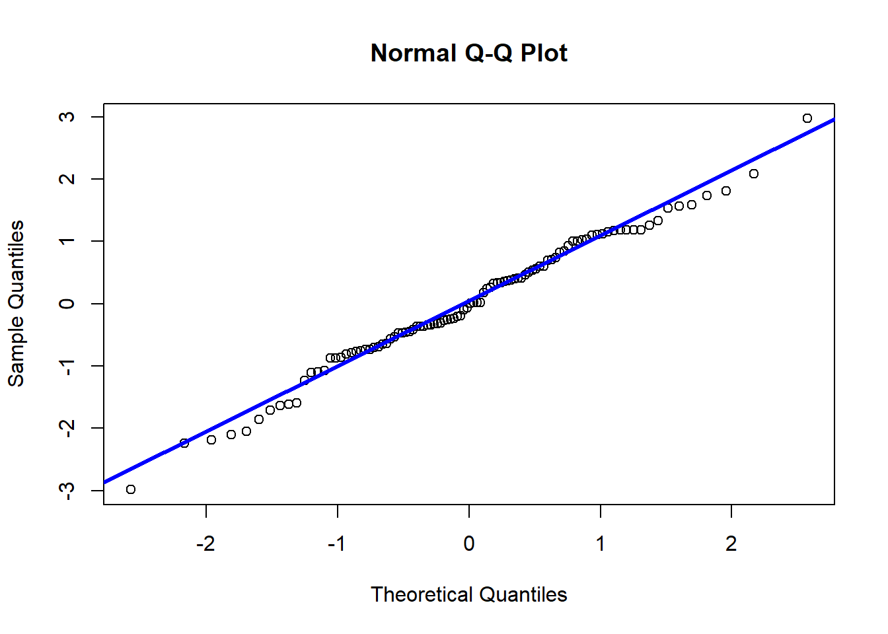

正态分布拟合检验
Boylad · 2018-10-11
根据\(Lindburg-Levy\space Central\space Limit \space Theorem\)很容易证明：如果
\(X_1,X_2,\cdots ,X_{12}\)都是在[0,1)上服从均匀分布的\(i.i.d\)随机变量，则\(Y\equiv X_1+X_2+ \cdots + X_{12}-6\)近似服从标准正态分布。
根据这个原理，我们先通过R软件生成100个近似服从标准正态分布的随机数。代码如下：
set.seed(123456) #设定随机数种子为123456
nor_100 <- 1:100
for (i in 1:100){
nor_100[i] <- sum(runif(12)) - 6
}
nor_100
## [1] 0.022384421 0.409195104 0.602395218 1.562694982 1.331292246
## [6] -2.985364296 0.007460991 -2.051920805 -0.533705457 -1.074096658
## [11] -0.688919044 0.554265918 -0.244318465 -0.734843765 -0.418217143
## [16] 1.149336254 0.929157292 -0.471460050 0.396235578 -0.877917859
## [21] -0.465563944 0.015427586 1.029458184 0.238252372 0.504198010
## [26] -0.260234837 1.538483847 -0.337819220 -0.189583970 -0.069517873
## [31] 0.463195686 -2.237649822 -0.313140458 -0.860949000 0.355996459
## [36] 0.259968906 2.083642828 -0.646033075 1.189157123 -0.241012939
## [41] -0.267470645 -1.638833288 0.178162610 1.005590949 -0.732858682
## [46] 0.371165029 0.413610096 1.814861185 0.337113872 1.125640202
## [51] -1.111297486 -2.184245256 1.179916502 0.604818944 1.736887636
## [56] -0.813974933 1.255968337 -0.560258657 -1.229802620 -0.317383847
## [61] -1.092542613 1.038906273 2.973158229 0.325855812 -0.874664855
## [66] -1.860244125 -0.338917627 -0.367559094 -0.697731983 0.381179258
## [71] 1.115229933 -0.358848311 -0.754317933 -0.450560875 -1.610090753
## [76] -0.324834281 -0.636276308 -0.767578846 0.336733144 0.019797274
## [81] -1.711779713 0.710324753 1.188670146 1.181941096 -0.363347217
## [86] 0.537016871 -0.101238159 1.591355491 -1.590564997 1.175761278
## [91] 1.097913412 0.736679110 1.002301730 -0.786508943 0.826216599
## [96] 0.843783007 0.695919832 -0.206358687 -2.099859705 -0.463495698然后，我们大致看一下这100个随机数的统计特征：
summary(nor_100)
## Min. 1st Qu. Median Mean 3rd Qu. Max.
## -2.98536 -0.65675 -0.03103 0.00429 0.75906 2.97316
sd(nor_100)
## [1] 1.056205
plot(nor_100, xlab = "Numbers", ylab = "Values", col = "red")
可以看到，我们所生成的100个随机数的均值为-0.03103，标准差为1.056205，与标准正态分布的均值和标准差非常接近。并且，这些随机数的最小值为-2.98536 ，最大值为2.97316，正如散点图所显示的那样，介于三倍\(\sigma\)之间。接下来，我们通过\(QQ\)图直观地看一下，这些随机数是否服从标准正态分布。
qqnorm(nor_100)
qqline(nor_100, col = "blue", lwd = 3)
在\(QQ\)图上，所有的随机数点都在\(QQ\)线附近，也说明这100个随机数近似服从标准正态分布。最后我们用\(Shapiro-Wilk\)检验（\(W\)检验）这些随机数。
shapiro.test(nor_100)
##
## Shapiro-Wilk normality test
##
## data: nor_100
## W = 0.98907, p-value = 0.5899\(Shapiro-Wilk\)检验的\(P\)值=0.5899，所以不拒绝原假设，即认为我们生成的这100个随机数服从